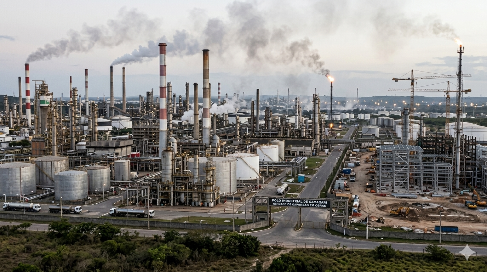
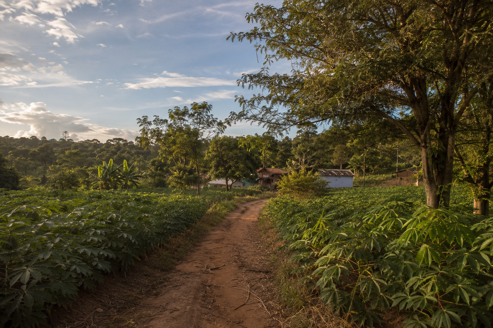
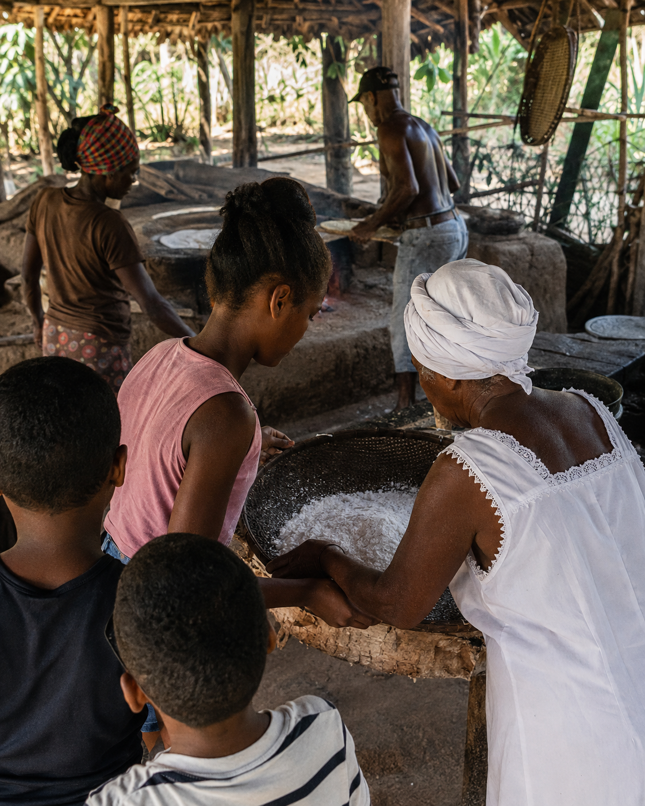
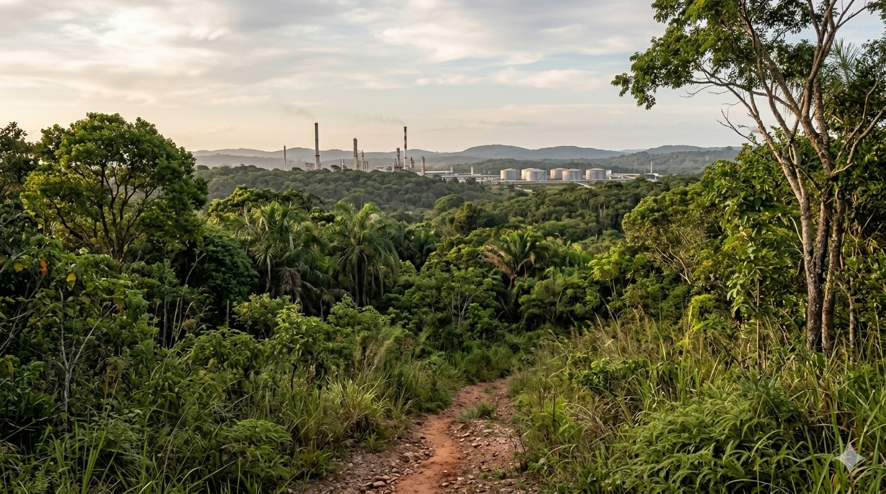
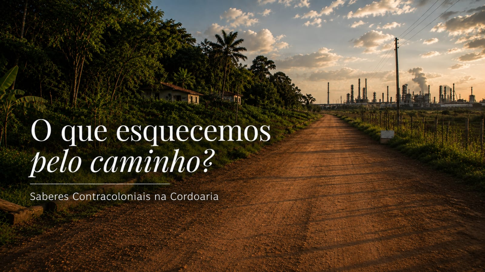

O que esquecemos
pelo caminho?
Uma investigação sobre os impactos da industrialização em Camaçari, os limites da chamada Economia Verde e as formas de resistência construídas pelos saberes ancestrais presentes na Comunidade Quilombola de Cordoaria.
Iniciar a leitura ↓O QUE ESQUECEMOS PELO CAMINHO?
Existe apenas uma forma de viver e produzir?
Desde muito cedo nos ensinaram que viver é correr. Correr para estudar, produzir, acumular e vencer. Aprendemos que o tempo precisa ser monetizado, que o descanso é uma falha no sistema e que a natureza é apenas uma prateleira de recursos infinitos à nossa disposição.
Diante das crescentes crises climáticas globais, o modelo capitalista reorganizou suas narrativas por meio da emergência da chamada Economia Verde e do Capitalismo Verde. Sob a justificativa da transição ecológica, o mercado corporativo passou a adotar discursos de sustentabilidade empresarial que, na prática, operam frequentemente através do greenwashing, camuflando a continuidade da exploração predatória dos recursos naturais.
Esse processo promove uma intensa financeirização da natureza, convertendo florestas, fontes de água e biodiversidade em ativos financeiros, como créditos de carbono e compensações ambientais. Ao transformar a preservação ambiental em mercadoria precificável, o Capitalismo Verde desconsidera os direitos territoriais e a soberania das populações locais, impondo soluções de mercado que mantêm a lógica de acumulação e espoliação.
Diante desse cenário, este trabalho busca responder à seguinte pergunta: de que forma os modos de viver, os saberes orgânicos e as práticas de biointeração presentes na Comunidade Quilombola de Cordoaria constituem formas de enfrentamento aos impactos socioambientais do capitalismo e aos limites conceituais da chamada Economia Verde?

A PROMESSA DA SUSTENTABILIDADE
Quando a natureza passa a ter preço, quem realmente é beneficiado?
Diante das crescentes crises climáticas globais, o modelo capitalista reorganizou suas narrativas por meio da emergência da chamada Economia Verde e do Capitalismo Verde.
Ao incorporar a linguagem da sustentabilidade, empresas e grandes empreendimentos passaram a apresentar suas atividades como ambientalmente responsáveis. Entretanto, essa mudança ocorreu, muitas vezes, apenas no plano discursivo, preservando a lógica de crescimento econômico baseada na exploração contínua dos territórios e dos recursos naturais.
Nesse contexto, a natureza deixa de ser compreendida como condição indispensável para a continuidade da vida e passa a assumir o papel de ativo econômico. Florestas, rios e biodiversidade tornam-se elementos negociáveis, submetidos à lógica do mercado, enquanto comunidades tradicionais permanecem enfrentando os impactos sociais e ambientais produzidos por esse modelo de desenvolvimento.
"A verdadeira sustentabilidade não decorre de mecanismos financeiros ou de certificações corporativas, mas de relações de respeito entre comunidade, território e natureza."
Em contraposição a essa lógica mercantil e reducionista, a perspectiva contracolonial evidencia que a verdadeira sustentabilidade nasce das relações históricas construídas pelos povos e comunidades tradicionais, que compreendem a Terra como parte da própria existência, e não como um recurso econômico.

O EPISTEMICÍDIO NEGRO E A AÇÃO CONTRACOLONIAL
Existem conhecimentos que nunca deixaram de existir, apenas foram silenciados.
O conceito de epistemicídio negro, desenvolvido por Sueli Carneiro, refere-se ao processo de destruição, apagamento e deslegitimação dos saberes, da cultura e da história dos povos africanos e de seus descendentes.
Ao definir quais conhecimentos seriam considerados científicos, universais e legítimos, a colonialidade instituiu uma hierarquia epistemológica que relegou os saberes ancestrais a uma posição de inferioridade, contribuindo para a manutenção das desigualdades raciais e sociais e para a desvalorização de diferentes formas de produzir conhecimento.
A partir dessa discussão, Antônio Bispo dos Santos desenvolve a teoria contracolonial, compreendida como uma forma de resistência às permanências das estruturas coloniais na sociedade contemporânea. Diferentemente de uma simples crítica ao colonialismo histórico, essa perspectiva fortalece os modos próprios de existência dos povos e comunidades tradicionais, valorizando seus territórios, seus conhecimentos e suas formas de relação com a natureza.
É nesse contexto que surgem conceitos como biointeração, confluência e saberes orgânicos, compreendidos como formas de produzir conhecimento a partir da experiência, da ancestralidade, da oralidade e da convivência com o território.
A humanidade não está separada da Terra, mas integra um mesmo organismo vivo.
COMUNIDADE QUILOMBOLA DE CORDOARIA
O território onde a resistência continua viva.
A Comunidade Quilombola de Cordoaria, situada na zona rural de Camaçari (BA), possui sua organização socioeconômica fundamentada na agricultura familiar e no turismo de base comunitária. Composta por mais de 300 famílias, preserva tradições de matriz africana através da produção artesanal, do cultivo da mandioca e de diversas manifestações culturais.

BIOINTERAÇÃO • SABERES ORGÂNICOS • RESISTÊNCIA
Sob a perspectiva da ação contracolonial e da valorização dos saberes ancestrais, o território quilombola constitui um símbolo vivo de resistência epistêmica e territorial frente à lógica eurocêntrica e à expansão urbano-industrial da Região Metropolitana de Salvador.
Essa forma de organização comunitária evidencia que o território ultrapassa sua dimensão física. Ele reúne memória, identidade, ancestralidade e formas próprias de produzir conhecimento. Em Cordoaria, cuidar da terra significa também cuidar das pessoas, preservando práticas transmitidas entre gerações e fortalecendo vínculos coletivos que resistem às transformações impostas pelo avanço industrial.
FRATURA METABÓLICA
Quando o território deixa de ser vida e passa a ser mercadoria.
A expansão industrial de Camaçari evidencia diferentes formas de compreender o território. Enquanto o modelo industrial prioriza a exploração econômica, a comunidade quilombola preserva relações construídas historicamente com a terra.
Sob a perspectiva da ecologia marxista, esse processo pode ser compreendido a partir do conceito de fratura metabólica, segundo o qual o sistema capitalista rompe o equilíbrio entre sociedade e natureza ao interromper os ciclos naturais e transformar o território em objeto de exploração econômica.
Nesse contexto, Cordoaria representa uma forma concreta de resistência territorial, demonstrando que desenvolvimento também pode significar permanência, memória, ancestralidade e comunidade.
MODELO INDUSTRIAL
Acumulação
Financeirização
Exploração
Velocidade
Mercadoria
CORDOARIA
Biointeração
Confluência
Saberes Orgânicos
Ancestralidade
Território Vivo

O QUE CORDOARIA NOS ENSINA?
Existem outras formas de construir o futuro.
A Comunidade Quilombola de Cordoaria demonstra que desenvolvimento não precisa significar ruptura entre sociedade e natureza. Seus modos de vida evidenciam relações baseadas na cooperação, na ancestralidade, na oralidade e no respeito ao território.
As reflexões de Antônio Bispo dos Santos demonstram que a ação contracolonial não consiste apenas em criticar o colonialismo, mas em fortalecer modos próprios de existência. Ao reconhecer os conhecimentos produzidos pelas comunidades tradicionais, essa perspectiva rompe com a ideia de que apenas os saberes científicos e urbanos são legítimos para compreender e transformar a realidade.
Essas reflexões dialogam diretamente com Ailton Krenak, ao compreender que a humanidade não está separada da Terra, mas integra um mesmo organismo vivo. Dessa forma, a exploração indiscriminada dos recursos naturais compromete também a continuidade da própria vida.
"A Comunidade Quilombola de Cordoaria constitui um exemplo concreto dessas perspectivas teóricas."
Mais do que preservar tradições, Cordoaria apresenta uma forma distinta de pensar o futuro. Seu território evidencia que desenvolvimento pode significar cooperação, autonomia comunitária, respeito aos ciclos da natureza e valorização dos saberes ancestrais, oferecendo respostas concretas aos limites do modelo econômico predominante.
AILTON KRENAK
"A humanidade não está separada da Terra,
mas integra um mesmo organismo vivo."
Antes de assistir ao documentário, permita-se refletir sobre esta ideia.
07 • DOCUMENTÁRIO
O território
fala.
Depois de conhecer os fundamentos desta pesquisa, convidamos você a ouvir as vozes que inspiraram este trabalho.

O documentário apresenta os relatos, as experiências e os saberes compartilhados pelos moradores da Comunidade Quilombola de Cordoaria, revelando formas de resistência, ancestralidade e pertencimento que fundamentam esta pesquisa.
MAIS DO QUE CONCLUIR
O território continua ensinando.
Esta pesquisa buscou compreender de que forma os modos de viver, os saberes orgânicos e as práticas de biointeração presentes na Comunidade Quilombola de Cordoaria constituem formas concretas de enfrentamento aos impactos socioambientais do capitalismo e aos limites da chamada Economia Verde.
Ao aproximar os referenciais de Sueli Carneiro, Antônio Bispo dos Santos e Ailton Krenak da realidade de Cordoaria, torna-se evidente que existem outras formas de compreender o território, produzir conhecimento e estabelecer relações com a natureza.
Mais do que preservar memórias, comunidades tradicionais preservam possibilidades de futuro. Seus conhecimentos revelam que desenvolvimento também pode significar permanência, cooperação, ancestralidade e respeito aos ciclos da vida.